訓練校課題 架空の野菜宅配サービス キャンペーンバナー
リーダーボード
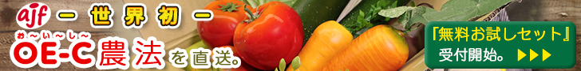 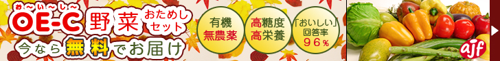 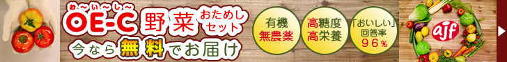▼ コンセプト
ミディアムレクタングル
 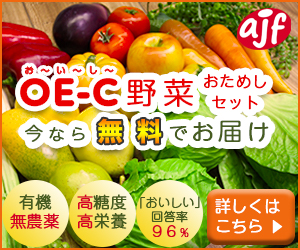
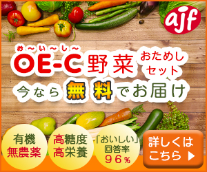
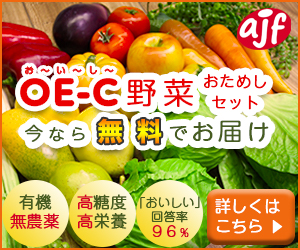
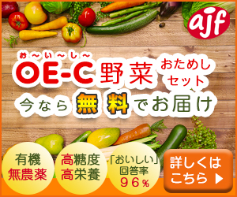
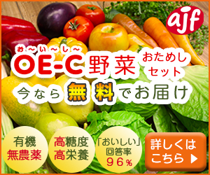
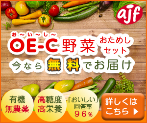
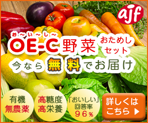
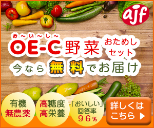
年末用ですので、特別感をコンセプトにしています。背景は黒にすることで商品画像と文字を際立たせ、「あんこう」のアクセントをフォントの強弱に適用し、鍋の温かみや動きを演出する煙を追加しました。リーダーボードは視線を左から右へ、ミディアムレクタングルはカタカナのコの字に視線を運ぶように文字を配置しました。
年末年始用に大手ECサイトで食材を調達するファミリー層です。ECサイトモール内には競合が多数存在するため、埋もれないように他社商品と差別化が可能な当該商品の特徴を明るい色彩やフォントの強弱を使用し目立つようにしています。
アピールポイント
サイト訪問はバナークリックの他にGoogle検索などの自然検索等、別ルートもあります。「OE-C農法」はAJF社の世界独占技術ですので、例えば「OE-C△無料」と検索エンジンで検索すれば、お試しセットのサイトが検索結果トップに高い確率で表示されると想定できます。その為、単語「OE-C」「無料」をセットで覚えてもらい、そこから最終的にサイト訪問に至るように、「OE-C」には平仮名で「お〜い〜し〜」のルビを振り、「無料」は他の文字より特に強調するカラーを選びました。バナーデザインに関しては、幅広い世帯に親しみやすいスーパーのような雰囲気をコンセプトとし、温かみのある色合いでまとめました。フォントはモリサワのUD新丸ゴをメインに、フォントカラーはバナーに使用した素材の画像から採用し、境界線を複数使用して縁取りしています。野菜の画像は白すぎるテカリをブラシツールで抑え、調整レイヤーで色合いを調整しています。また、MRのサイズはスマホ向けバナーにも流用できますので、文字数を抑えたデザインになるよう意識しました。
ユーザーターゲット
競合他社のメインユーザでもある２０代から５０代までの共働き世帯がターゲットです。バナー掲載期間の１０月初旬一週間は消費税改定直後です。食材の税率は８%据え置きですが、外食等の他の税率が１０％に増税となります。これに伴い、家庭で食事する頻度が上がる世帯の割合も増加すると予想され、既に他社のサービスを利用しているユーザ含めて個人が消費やライフスタイルを見直すタイミングとなり、新規ユーザを取り込める機会であると見込んでいます。アピールポイントでも述べましたが、独占技術の「OE-C野菜」や独自キャンペーン「無料お試しセット」の単語を強調することで他社との差別化も図っています。２作目と３作目のバナーはOE-C野菜の特徴の一部を一般のユーザがイメージしやすい単語を整列させてアピールしています。